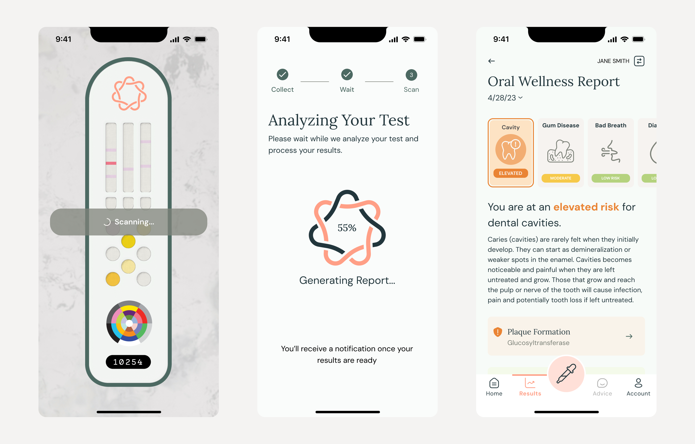
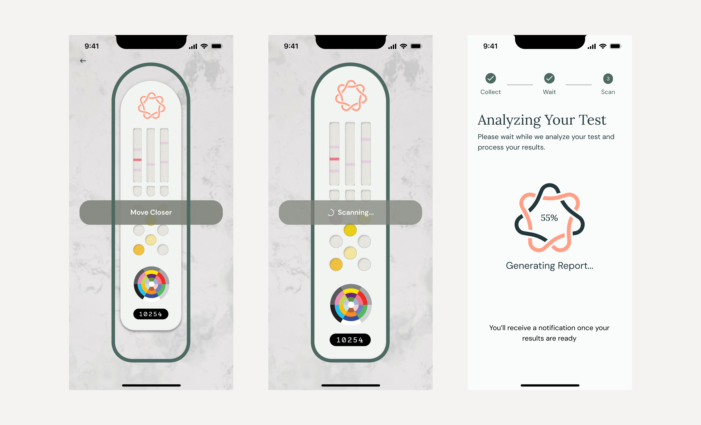
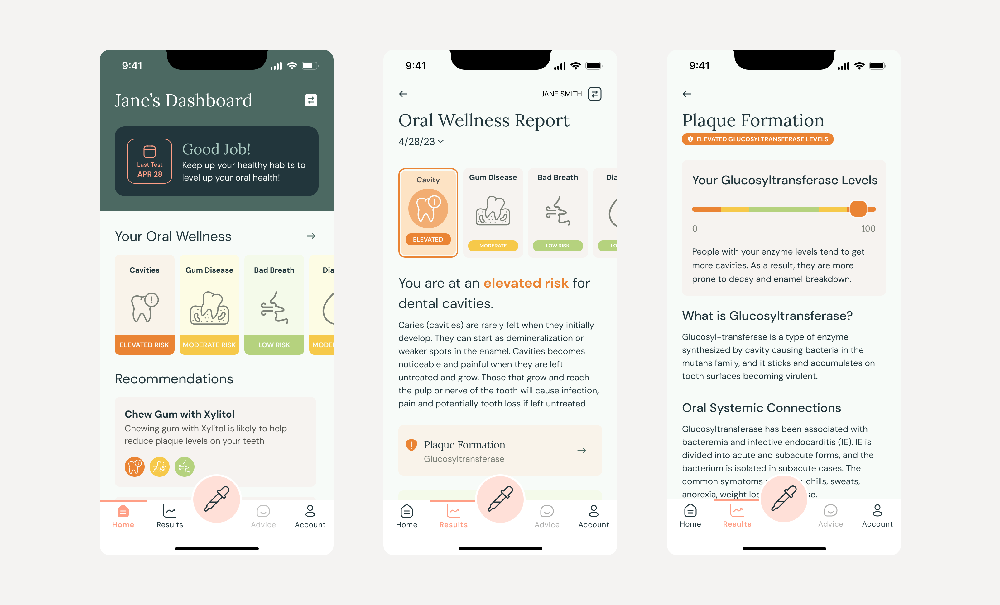

At-Home Oral Health Testing

"...nearly 1.7 million people in the US did not have access to dental clinics within a 30-minute drive, and 24.7 million lived in dental care shortage areas."Dental Clinic Deserts in the US: Spatial Accessibility Analysis (2024)
In 2023, a startup wanted to improve dental care access in dental deserts by developing an oral health test kit that people at home could take on their own. They'd provide a saliva sample and then scan a test card using computer vision to get a personalized assessement of their oral health and tailored advice in less than an hour, significantly reducing barriers to dental care.
Over 6 months, I led design for a a mobile app to guide test takers at home to complete their test and view their results, an employee web app to manually review and correct computer vision readings of test cards scans to train the model, and a concept tablet app for providers to uncover dental trends across their office and manage test kit inventory.
My team included a junior product designer and a product architect. I worked cross-functionally, facilitating design reviews with the founders, refining copy with the medical copywriter, and partnered with the development team to validate feasibility, handoff features, and conduct UX QA.
Goals:
- Create a working prototype of the end-to-end test card experience mobile app experience to conduct a pilot testing the efficacy of computer vision and secure investment
- Design a process and web app to allow employees to review computer vision scans and train computer vision
- Explore the value the test kit could provide to dental providers
I collaborated with the engineering team to build a prototype of the mobile design which the client used to demo and secure investment from the American Dental Association.
Simple Do-It-Yourself Testing
I collaborated with the client to design a test taking process and the mobile app to guide users from prepping their saliva sample to taking a quality scan of their test card and finally getting their oral health report. Since we couldn't expect dental professionals to be present, we made sure to add guardrails and use plain language to prevent errors. COVID-19 tests were a major inspiration for the process since we could expect users to be familiar with taking one and have a mental model of how to take a test at home.
Test Scanning

Computer vision needed a quality scan to accurately read and interpret test card results. Lighting, exposure, contrast, or positioning could all make a scan difficult to read so we designed real-time feedback to let users know if they were scanning correctly. The engineering team had a large backlog to work through so we decided on addressing positioning first and planned to use the pilot to learn what mistakes users might make rather than overengineer the guardrails.
Actionable Advice

Once computer vision analyzed their test card, users would see an oral wellness report of their readings, risk levels and tailored advice. The goal here was to help test takers understand why they received the risk levels they did, and how they could change their habits to improve their score.
Without a dentist at home to explain dental health to users, the advice offered needed to be in everyday language. I partnered with the medical copywriter to use more everyday language and use friendly names alongside scientific names. For example, we paired Glucosyltransferase with its friendly name “Plaque Formation”.
Dental Provider Tablet Concept

The client wanted to explore dental providers as a potential market. I saw an opportunity for dentists to use aggregated patient risk data across their clinic and identify trends to improve their approach to care. I designed a tablet dashboard concept visualizing risk levels across patients and included a few quality of life features to streamline test kit inventory management and remind when patients would need to take another test.
Training Computer Vision

Computer vision needed to be trained to read test cards accurately so I designed a feedback loop for employees to review a queue of completed tests and make corrections to computer vision’s readings. This feedback would be used to train computer vision and also allow reviewers to identify issues with scan quality during the pilot.